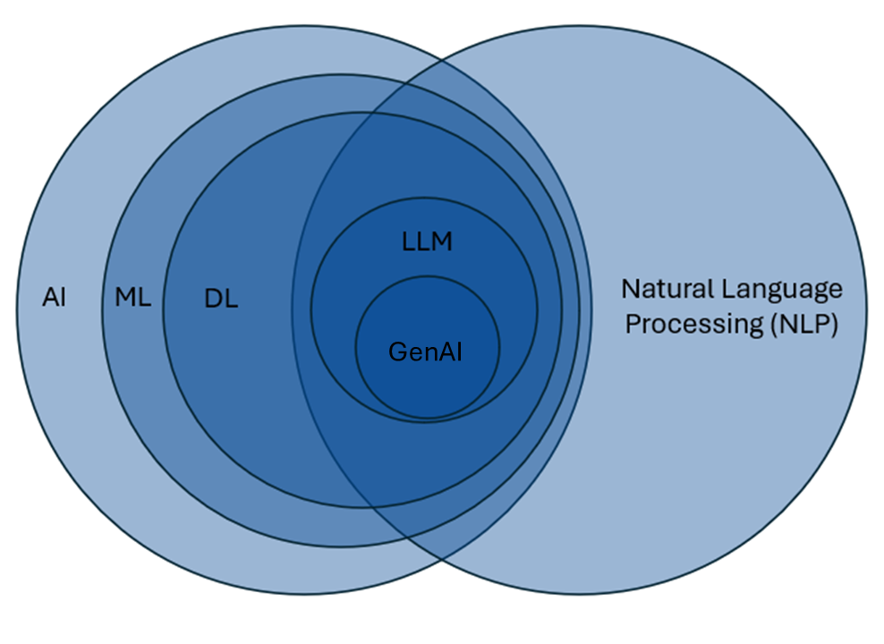

Generative AI Fundamentals
It is useful to learn some fundamental aspects about GenAI models prior to their use. I have often found that there are many guides online that tell you how to use these LLMs, but don’t tell you why you should use these LLMs. Although the guidance given by these guides is often useful, when your prompt isn’t resulting in the output you want it’s unclear how to make improvements because you don’t have the foundational knowledge of how the model might be processing your prompt.
Even though these generative AI models continue to improve without extensive prompt engineering, this foundational knowledge will serve you well in building your own generative AI workflows.
What is Generative AI?
 So what is a Gen AI model? We often hear the words GPT, generative AI, AI, LLM, and machine learning models used somewhat interchangeably and that isn’t always necessarily the case. Sometimes the speaker may not understand that they’re referring to something they don’t intend to refer to, or sometimes the technical aspects of what exactly they’re referring to doesn’t quite matter.
In this diagram, I’ve attempted to show you the relationship between GenAI models and some related fields. I need to note that the scale of the circles in this image is not accurate – instead I’ve only attempted to show the relationships between some of these larger fields.
If we’re working from the left-hand side inward, our outermost circle is Artificial Intelligence, or AI. Artificial intelligence is the broad field of computer science focused on creating systems that can perform tasks typically requiring human intelligence, such as problem-solving, reasoning, and understanding language. I’ve heard some people argue that statistical models like regressions can be included in this large circle because you’re learning about relationships in data that are not directly observable, but I’m not sure that I’m convinced of this argument, but it does give you an idea of how broad the field of AI can be construed.
As we start to go inward a little more, we have Machine Learning. Machine learning is a subset of AI that involves algorithms that learn patterns from data and improve their performance on tasks over time without being explicitly programmed for every possible scenario. This is different from a regression where you identify all the key predictor variables of interest based on your knowledge of the domain. With machine learning you just need to identify enough of the potentially relevant variables to maximize your predictions. Here is where we start to encounter so-called “black box” models because sometimes interpreting the decision-making processes of the algorithm becomes difficult due to the complex nature of the models.
Going further inward, we have Deep Learning, which is a subset of Machine Learning models. These models eliminate the need for identifying variables due to the large amount and variety of data that are supplied to the models. Deep Learning models use very complex algorithms to identify complex patterns in the data, and their results are often more uninterpretable. This is good for things like speech and natural language, where relationships between variables are not easily identified.
I’ll now jump to the right-hand side and the large field of Natural Language Processing. Broadly speaking, natural language processing is focused on enabling computers to understand and interpret human language, and you can see it’s a very broad field of study in and of itself. There are areas of NLP that don’t necessarily overlap with machine learning or deep learning, such as sentiment analysis or topic modeling which may not use Machine Learning or Deep Learning Models.
If we look at the overlap between deep learning models and natural language processing models, we see that Large Language Models – LLMS – live here. LLMs represent a deep learning approach within NLP that leverages vast amounts of text data to generate and understand human-like language. These models go beyond traditional NLP techniques by using statistical learning to predict and produce coherent, context-aware text at scale. Not all LLMs are generative AI models, such as language translation app.
Now, finally, in the middle we have Generative AI Models (Gen AI). These models that are a specific type of LLM that are designed to generate output that model resemble their training data. The most common model is a generative text model, although models are now being developed that have the capability to generate images, audio, and video.
What is a Generative Pre-trained Transformer?
Generative Pre-trained Transformers (GPTs) are a type of generative AI model. While not all generative text models have “GPT” in their name, understanding their underlying structure can be helpful for learning how these models work. Let’s look at each letter in the acronym:
Generative
The G in GPT stands for generative, which refers to the model’s ability to generate new content based on its training data. :Make analogy to regression:
Pre-trained
Generative AI models undergo a vast amount of model pre-training (the P). In a generative text model, this includes a vast corpus of text data. To give you an idea of how large this training data is, when I was first learning about these models, I often heard presenters say some of these models were trained on all the publicly-available text on the internet. Having such a vast amount of data equips the model with a broad “understanding” of language and its nuances. This understanding is a recognition of the patterns of word usage across many contexts.
It is important to note that the models are made to generate content and do not have the ability to reflect on the factual accuracy of the information that is provided. If the training data contains extensive information that is related to the input, there’s a higher probability that it will be correct, but there is no guarantee. When using text models, these models are merely predicting the most likely next token in the output. There is no self-reflective step where the model evaluates whether the information being provided is factually accurate. When the model produces information that is not correct in some aspect, this is what is known as a “hallucination”.
Transformer
And, finally, T – transformer. This is a technical aspect of the model architecture. : More details and links for this audience. :